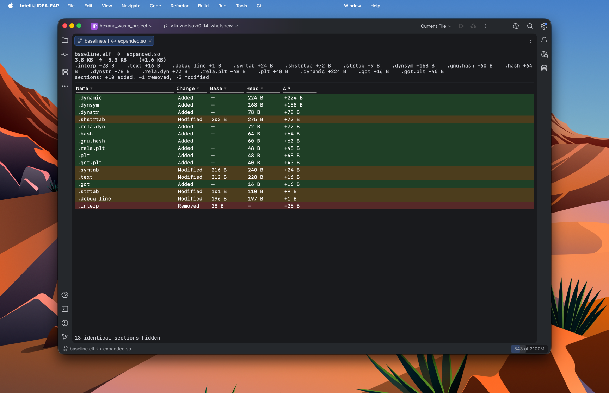
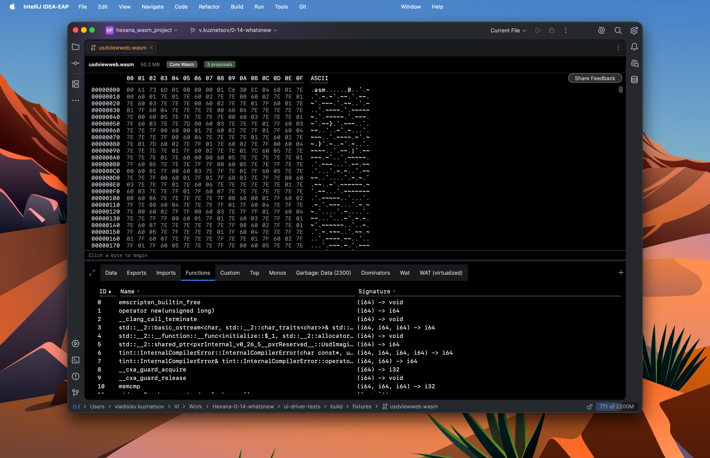
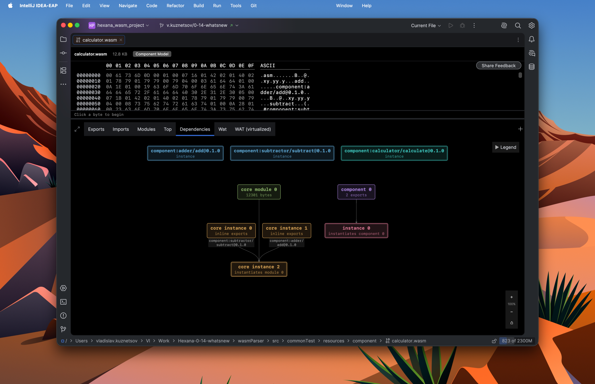
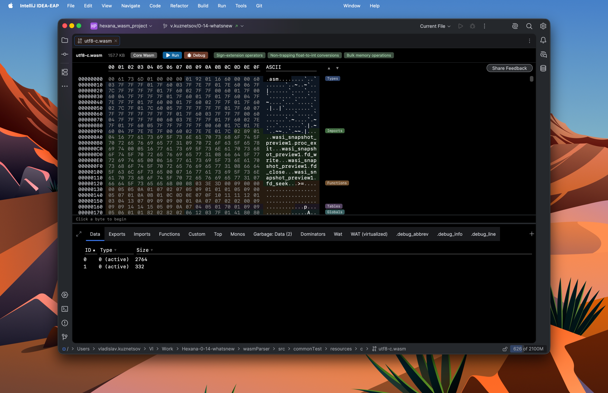

Hexana update
What's New in Hexana 0.14
Hexana 0.14 focuses on Native binaries, WASM, and Component Model while refining binary inspection inside JetBrains IDEs.
Native binaries
Compare native binary size changes
Compare two native binaries directly in Hexana and see how every section’s size changed.
- Action to show a diff between two native binary files with size changes per section.

WASM
Analyze large WASM modules without freezing the IDE
Functions and dominator analysis now load in the background, while compact call-graph data keeps very large modules within the IDE’s normal memory budget.
- The call graph models indirect calls through a single synthetic
<indirect calls>node: each function containing acall_indirectgets one edge to it, and it fans out to the function table. In the Dominators view, functions reachable only through indirect calls now group under that node instead of scattering across the tree. - Opening the Functions tab of a large module no longer freezes the whole IDE. Its module-wide inputs (function signatures.
- Large modules, including 64-bit memory (memory64 / wasm64) builds, no longer exhaust the IDE heap when analyzed. Dominator results are stored in one compact int buffer instead of boxed hash maps, the dominance frontier (a near-quadratic structure nothing in the product consumed) is no.

Component Model
See how Component Model dependencies connect
Explore a visual graph of imports, embedded modules and components, instances, and exports wired through instantiation arguments.
- Component Model binaries now have a Dependencies tab that visualizes how imports, embedded core modules and nested components, instances, and exports are connected through instantiation arguments.

Inspection
Read binary structure at a glance
Hexana now highlights binary sections and lets you move between them in WASM and native files.
- Semantic highlighting of sections and navigation between sections for WASM and Native binary files.

Also in 0.14
- Smoother binary-inspection workflows Empty analysis tabs now finish cleanly, the vertical splitter is easier to grab, and WASM Diff respects two files selected in the project view.